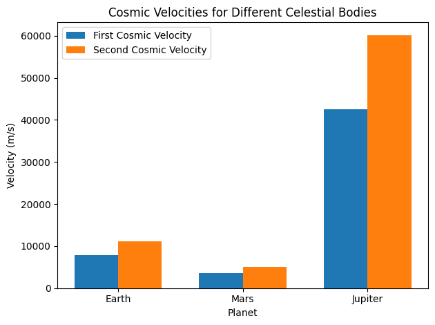

Problem 2
Escape Velocities and Cosmic Velocities
1.1 Motivation
The concept of escape velocity is fundamental in astrophysics and space exploration.
It defines the minimum speed an object must reach to overcome the gravitational influence of a celestial body without additional propulsion.
Extending this concept further, the first, second, and third cosmic velocities describe the thresholds for orbiting a planet, escaping a planet's gravitational pull, and escaping a star system, respectively.
These concepts are critical in designing satellite launches, interplanetary missions, and potential interstellar travel.
1.2 Deliverables
1 . Markdown Document: Detailed explanation of escape and cosmic velocities.
2 . Python Script: Computational model to calculate and visualize the velocities.
3 . Graphical Representations:
- Bar chart comparing first and second cosmic velocities for Earth, Mars, and Jupiter.
1.3 Theoretical Foundation
Definitions and Physical Meanings
-
First Cosmic Velocity: The velocity required for an object to maintain a stable circular orbit around a celestial body.
\[v_1 = \sqrt{\frac{G M}{r}}\]
Where:
- \((G)\): Gravitational constant
- \((M)\): Mass of the celestial body
- \((r)\): Radius of the orbit (distance from the center of the body)
2 . Second Cosmic Velocity (Escape Velocity): The velocity required to escape the gravitational field of a celestial body.
$$ v_2 = \sqrt{2} v_1 = \sqrt{\frac{2 G M}{r}} $$
3 . Third Cosmic Velocity: The velocity required to escape the gravitational influence of a star system.
$$ v_3 = \sqrt{v_2^2 + \frac{2 G M_{\text{star}}}{r}} $$
Where \(M_{\text{star}}\) is the mass of the central star.
2. Mathematical Analysis
Parameters Influencing Cosmic Velocities
- Mass \(( M )\): Higher mass increases the gravitational pull, raising all three velocities.
- Radius \(( r )\): Greater distances from the center of the celestial body reduce the gravitational force, lowering the velocities.
- Gravitational Constant \(( G )\): A universal constant influencing the strength of gravity.
Calculations for Earth, Mars, and Jupiter
Example Values:
- Earth: \(( M = 5.972 \times 10^{24} \ \text{kg}, r = 6.371 \times 10^{6} \ \text{m} )\)
- Mars: \(( M = 6.39 \times 10^{23} \ \text{kg}, r = 3.39 \times 10^{6} \ \text{m} )\)
- Jupiter: \(( M = 1.898 \times 10^{27} \ \text{kg}, r = 6.99 \times 10^{7} \ \text{m} )\)
3. Computational Implementation
Python Script
import numpy as np
import matplotlib.pyplot as plt
# Gravitational constant (m^3 kg^-1 s^-2)
G = 6.67430e-11
# Define celestial bodies
data = {
"Earth": {"mass": 5.972e24, "radius": 6.371e6},
"Mars": {"mass": 6.39e23, "radius": 3.39e6},
"Jupiter": {"mass": 1.898e27, "radius": 6.99e7},
}
# Calculate velocities
results = {}
for planet, values in data.items():
mass = values["mass"]
radius = values["radius"]
v1 = np.sqrt(G * mass / radius) # First cosmic velocity
v2 = np.sqrt(2) * v1 # Second cosmic velocity
results[planet] = {"v1": v1, "v2": v2}
# Display results
for planet, velocities in results.items():
print(f"{planet}: First Cosmic Velocity = {velocities['v1']:.2f} m/s, Second Cosmic Velocity = {velocities['v2']:.2f} m/s")
# Visualization
labels = list(results.keys())
v1_values = [results[planet]["v1"] for planet in labels]
v2_values = [results[planet]["v2"] for planet in labels]
x = np.arange(len(labels))
width = 0.35
fig, ax = plt.subplots()
bar1 = ax.bar(x - width/2, v1_values, width, label="First Cosmic Velocity")
bar2 = ax.bar(x + width/2, v2_values, width, label="Second Cosmic Velocity")
ax.set_xlabel("Planet")
ax.set_ylabel("Velocity (m/s)")
ax.set_title("Cosmic Velocities for Different Celestial Bodies")
ax.set_xticks(x)
ax.set_xticklabels(labels)
ax.legend()
plt.tight_layout()
plt.show()

4. Discussion
Importance in Space Exploration
- Launching Satellites: The first cosmic velocity determines the minimum speed required for satellites to orbit Earth.
- Interplanetary Missions: The second cosmic velocity is critical for missions escaping Earth's gravitational pull, such as journeys to Mars.
- Interstellar Travel: The third cosmic velocity underpins the feasibility of missions beyond our solar system.
Limitations and Extensions
- Simplifications: Assumes point masses and neglects factors like atmospheric drag or relativistic effects.
- Extensions: Explore scenarios with varying atmospheric densities or gravitational influences from multiple bodies.
Understanding cosmic velocities is not only a theoretical exercise but also a practical necessity in advancing humanity's reach into space.
This framework forms the foundation for the precise calculations required in modern space exploration.